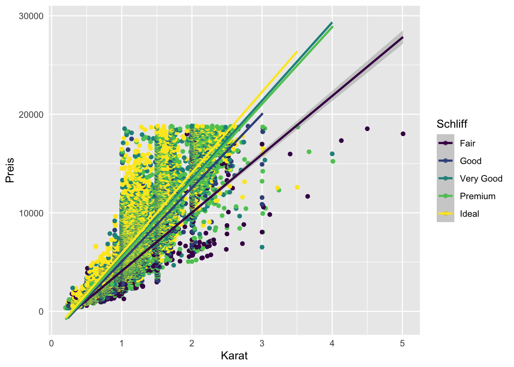

Kapitel 14 Tests für einfache Gruppenvergleiche
14.1 Ein-Stichproben t-Test
data = read.csv("data/One sample t-test.csv")
names(data) = c("gewicht", "groesse")14.1.1 Hypothesen
Mit einem Ein-Stichproben t-Test vergleichen wir den Mittelwert einer Gruppe mit einem hypothetischen Mittelwert.
Der Test prüft also anhand des Mittelwerts einer Stichprobe, ob der Erwartungswert in der entsprechenden Population gleich einem vorgegebenen Wert ist (dem unter \(H_{0}\) erwarteten \(μ_{0}\)).
Es sind folgende Hypothesen denkbar:
Test auf Unterschiedlichkeit von dem Referenzwert (ungerichtet):
- \(H_0\): \(μ=μ_{0}\)
- \(H_1\): \(μ\neqμ_0\)
Test, ob Mittelwert größer/kleiner als Referenzwert ist (gerichtet):
- \(H_0\): \(μ≤μ_{0}\); \(H_1\): \(μ>μ_{0}\)
- \(H_0\): \(μ≥μ_{0}\); \(H_1\): \(μ<μ_{0}\)
Zum Beispiel könnten wir eine Stichprobe von Menschen aus Deutschland erhoben haben und uns dafür interessieren, ob diese signifikant größer, bzw. kleiner als der Durchschnitt in Deutschland sind.
Die ersten Zeilen des Stichprobendatensatzes könnten so aussehen:
## gewicht groesse
## 1 77 182
## 2 68 177
## 3 76 170
## 4 76 167
## 5 69 186
## 6 71 178Zunächst brauchen wir einen hypothetischen Vergleichswert. Sucht man die geschlechterübergreifende Durchschnittsgröße in Deutschland im Internet findet man einen Wert von ca. 173 cm.
14.1.2 Deskriptive Einordnung
Die Berechnung unseres Mittelwerts ist einfache Deskriptivstatistik:
mean(data$groesse)## [1] 177.6087Der Sachverhalt lässt sich auch graphisch darstellen:
ggplot(data = data, aes(x = groesse)) +
geom_histogram(bins = 40, fill = "black") +
labs(x = "Größe", y = "N") +
geom_vline(xintercept = 173, linetype = "dashed", colour = "red") +
geom_vline(xintercept = mean(data$groesse), linetype = "dashed", colour = "green") +
theme_classic() 
Die grüne Linie im Zentrum des Histogramms stellt unseren Stichprobenmittelwert dar. Die rote Linie ist der angenommene Mittelwert in der Population von 173 cm.
14.1.3 Test durchführen
Zur Durchführung des Tests nutzen wir die in der Grundform von R vorinstallierte t.test() Funktion.
t.test(data$groesse, mu = 173, alternative = "two.sided", conf.level = 0.95)##
## One Sample t-test
##
## data: data$groesse
## t = 4.4969, df = 22, p-value = 0.0001792
## alternative hypothesis: true mean is not equal to 173
## 95 percent confidence interval:
## 175.4833 179.7341
## sample estimates:
## mean of x
## 177.6087Wir wählen die Variable groesse innerhalb unseres Datensatzes mit dem $ Zeichen an. Über das mu Argument geben wir den hypothetischen Vergleichswert an. Unter alternative können wir auswählen, ob der Test gerichtet oder ungerichtet (aka ein- oder zweiseitig) durchgeführt werden soll. Je nach Hypothese wählen wir "two.sided" für einen ungerichteten Test und entweder "less" oder "greater" für einen gerichteten Test. Das conf.level entsprich unserem Signifikanzniveau.
14.1.4 Ergebnis interpretieren
Das Ergebnis des Tests lässt sich am P-Wert ablesen (p=0.0001792). Ist der P-wert kleiner als das gewählte Signifikanzniveau (i.d.R \(\alpha=.05\)) unterscheidet sich unser Stichprobenmittelwert (177.61 cm) signifikant von der Durchschnittsgröße in Deutschland (173 cm). Wir verwerfen also die Nullhypothese (H0) zugunsten unserer Alternativhypothese (H1).
14.1.5 Ergebnis berichten
Die relevanten Parameter zum Berichten eines Ein-Stichproben t-Tests sind
- M (Mittelwert)
- Grenzen des Konfidenzintervalls des Mittelwerts
- t-Wert (Teststatistik)
- df (Freiheitsgerade)
- P-Wert
Beim Berichten im Fließtext schreibt man:
Die Größe in der Stichpobe unterschied sich signifikant von der Durchschnittsgröße in Deutschland (173 cm), M = 177.61, 95% CI (175.48, 179.73), t (22) = 4.5; p < .001.
Diese Werte lassen sich wie folgt aus dem t-Test Objekt extrahieren:
t-Wert (Teststatistik):
t.test(data$groesse, mu = 173, alternative = "two.sided", conf.level = 0.95)$statistic## t
## 4.496872df (Freiheitsgerade):
t.test(data$groesse, mu = 173, alternative = "two.sided", conf.level = 0.95)$parameter## df
## 22P-Wert:
t.test(data$groesse, mu = 173, alternative = "two.sided", conf.level = 0.95)$p.value## [1] 0.0001792355Grenzen des Konfidenzintervalls (unten & oben):
t.test(data$groesse, mu = 173, alternative = "two.sided", conf.level = 0.95)$conf.int[1]## [1] 175.4833t.test(data$groesse, mu = 173, alternative = "two.sided", conf.level = 0.95)$conf.int[2]## [1] 179.734114.1.6 Effektstärke
14.1.6.1 Cohen’s d
Die am häufigsten verwendete Effektstärke für den Ein-Stichproben t-Test ist Cohen’s d Cohen (1988).
Cohen’s d lässt sich mit dem Paket effsize berechnen. Dieses verwendet praktischerweise die gleiche Schreibweise, wie der t-Test:
effsize::cohen.d(data$groesse, f = NA, mu = 173)##
## Cohen's d (single sample)
##
## d estimate: 0.9376626 (large)
## Reference mu: 173
## 95 percent confidence interval:
## lower upper
## 0.02651145 1.84881385Auch die Einzelparameter von Cohen’s d lassen sich extrahieren:
Cohen’s d:
effsize::cohen.d(d = data$groesse, f = NA, mu = 173)$estimate## [1] 0.9376626Grenzen des Konfidenzintervalls (unten & oben):
effsize::cohen.d(d = data$groesse, f = NA, mu = 173)$conf.int[1]## lower
## 0.02651145effsize::cohen.d(d = data$groesse, f = NA, mu = 173)$conf.int[2]## upper
## 1.848814Die Interpretation von Cohens’d lautet wie folgt Cohen (1992):
| d | Interpretation |
|---|---|
| |>0.2| | kleiner Effekt |
| |>0.5| | mittlerer Effekt |
| |>0.8| | großer Effekt |
14.1.7 Darstellung in Tabellenform
Zur sauberen Darstellung des Ergebnisses in einer bereits nach APA formatierten Tabelle, lassen sich die Funktionen apa_print und apa_table aus dem Paket papaja verwenden.
library(papaja)
apa_test <- apa_print(
t.test(data$groesse, mu = 173, alternative = "two.sided", conf.level = 0.95)
)
apa_table(
apa_test$table, caption = "Tabelle für den Ein-Stichproben t-Test."
)| \(M\) | 95% CI | \(t\) | \(\mathit{df}\) | \(p\) |
|---|---|---|---|---|
| 177.61 | [175.48, 179.73] | 4.50 | 22 | < .001 |
14.2 t-Test bei unabhängigen Stichproben
14.2.1 Hypothesen
Mit einem unabhängigen t-Test vergleichen wir die Mittelwerte von 2 unabhängigen Gruppen. Im Datensatz müssen zwei Variablen vorhanden sein, eine numerische Variable (AV), für die Mittelwerte berechnet werden können und eine dichotome Gruppenvariable (UV).
Es sind folgende Hypothesen denkbar:
Test auf Unterschiedlichkeit der beiden Gruppenmittelwerte (ungerichtet):
- \(H_0\): \(μ_1=μ_2\) bzw. \(μ_1−μ_2=0\) und \(σ_1=σ_2=σ\)
- \(H_1\): \(μ_1\neqμ_2\) bzw. \(μ_1−μ_2\neq0\) und \(σ_1=σ_2=σ\)
Test, ob Mittelwert der einen Gruppe größer/kleiner als Mittelwert der anderen Gruppe ist (gerichtet):
- \(H_0\): \(μ_1\leqμ_2\) bzw. \(μ_1−μ_2\leq0\) und \(σ_1=σ_2=σ\)
- \(H_1\): \(μ_1>μ_2\) bzw. \(μ_1−μ_2>0\) und \(σ_1=σ_2=σ\)
Zum Beispiel könnten wir eine Stichprobe bestehend aus Männern und Frauen erhoben haben, die eine Diät durchgeführt haben. Eine Fragestellung könnte sein, ob Männer und Frauen (Geschlecht = dichotome UV) unterschiedlich viel abgenommen haben (Gewichtsverlust = numerische AV).
Die ersten Zeilen des Stichprobendatensatzes könnten so aussehen:
## Gender Weight.loss
## 1 Males 0.0
## 2 Males 0.0
## 3 Males 3.8
## 4 Males 6.0
## 5 Males 0.7
## 6 Males 2.914.2.2 Deskriptive Einordnung
Zunächst können wir uns die Deskriptivstatistiken innerhalb der beiden Gruppen einmal anschauen:
psych::describeBy(Weight.loss ~ Gender, data = data)##
## Descriptive statistics by group
## Gender: Females
## vars n mean sd median trimmed mad min max range skew kurtosis
## Weight.loss 1 42 6.93 2.24 7 6.9 1.93 1.6 12.2 10.6 0.12 0.38
## se
## Weight.loss 0.35
## ------------------------------------------------------------
## Gender: Males
## vars n mean sd median trimmed mad min max range skew kurtosis
## Weight.loss 1 45 3.72 2.59 3.4 3.75 2.82 -2.1 8.5 10.6 0.01 -0.92
## se
## Weight.loss 0.39Rein deskriptiv lässt sich bereits feststellen, dass Männer mit 3.72kg etwas weniger abgenommen zu haben scheinen, als Frauen mit 3.72kg.
Ob sich dieser numerische Unterschied auch als signifikant erweist, prüfen wir mit dem t-Test.
14.2.3 Test durchführen
Zur Durchführung des Tests nutzen wir die in der Grundform von R vorinstallierte t.test() Funktion.
Die Schreibweise in Formelformat nimmt die Form AV ~ UV an, wobei ~ soviel heißt wie “wird vorhergesagt durch”.
t.test(Weight.loss ~ Gender, data = data)##
## Welch Two Sample t-test
##
## data: Weight.loss by Gender
## t = 6.191, df = 84.544, p-value = 0.00000002069
## alternative hypothesis: true difference in means is not equal to 0
## 95 percent confidence interval:
## 2.178046 4.239097
## sample estimates:
## mean in group Females mean in group Males
## 6.928571 3.720000Alternative Schreibweise:
t.test(data$Weight.loss[data$Gender == "Males"], data$Weight.loss[data$Gender == "Females"])##
## Welch Two Sample t-test
##
## data: data$Weight.loss[data$Gender == "Males"] and data$Weight.loss[data$Gender == "Females"]
## t = -6.191, df = 84.544, p-value = 0.00000002069
## alternative hypothesis: true difference in means is not equal to 0
## 95 percent confidence interval:
## -4.239097 -2.178046
## sample estimates:
## mean of x mean of y
## 3.720000 6.928571Für einen gerichteten Test (z.B. Frauen nehmen mehr ab als Männer)
t.test(Weight.loss ~ Gender, data = data, alternative = "greater")##
## Welch Two Sample t-test
##
## data: Weight.loss by Gender
## t = 6.191, df = 84.544, p-value = 0.00000001035
## alternative hypothesis: true difference in means is greater than 0
## 95 percent confidence interval:
## 2.34666 Inf
## sample estimates:
## mean in group Females mean in group Males
## 6.928571 3.72000014.2.4 Relevante Parameter extrahieren
Die relevanten Parameter zum Berichten eines unabhängigen t-Tests sind:
- \(\Delta\)M (Differenz vom Mittelwert zum Referenzwert)
- Grenzen des Konfidenzintervalls der Mittelwertsdifferenz
- t-Wert (Teststatistik)
- df (Freiheitsgerade)
- P-Wert
Diese Werte lassen sich wie folgt aus dem t-Test Objekt extrahieren:
t-Wert (Teststatistik):
t.test(Weight.loss ~ Gender, data = data)$statistic## t
## 6.191013df (Freiheitsgerade):
t.test(Weight.loss ~ Gender, data = data)$parameter## df
## 84.544P-Wert:
t.test(Weight.loss ~ Gender, data = data)$p.value## [1] 0.00000002069288Grenzen des Konfidenzintervalls (unten & oben):
t.test(Weight.loss ~ Gender, data = data)$conf.int[1]## [1] 2.178046t.test(Weight.loss ~ Gender, data = data)$conf.int[2]## [1] 4.23909714.2.5 Voraussetzungsprüfung und Alternativen
Folgende Vorraussetzungen gelten für den unabhängigen t-Test: * unabhängige Messungen * Intervallskala * Normalverteilung in beiden Gruppen * Homogenität der Varianzen
Sollten die Vorraussetzungen Intervallskalekniveau und Normalverteilung verletzt sein, muss ein robuster Test gerechnet werden (s.u. U-Test).
Die Varianzhomogenität wird mittels Levene’s Test (F-Test) geprüft Levene (1960). Eine Funktion dafür ist im Patek car enthalten.
car::leveneTest(Weight.loss ~ Gender, data = data)## Levene's Test for Homogeneity of Variance (center = median)
## Df F value Pr(>F)
## group 1 2.0175 0.1591
## 85Ein signifikanter Levene’s Test bedeutet, dass sich die Varianzen innerhalb der Gruppen signifikant unterscheiden. Sie sind also nicht “homogen”.
Zum Berichten eines Levene’s Test gibt es nicht viel zu tun. Lediglich die Freiheitsgrade, der F-Wert und die Signifikanz sind zu berichten. Die übliche Form hierfür ist die folgende: F(1,49) = 16,908, p = 0,0001493
Liegt keine Varianzhomogenität vor, berechnet man stattdessen einen Welch-Test.
Um einen Welch-Test zu berechnen, ändern wir nur leicht die Funktion:
t.test(Weight.loss ~ Gender, data = data, var.equal = FALSE)##
## Welch Two Sample t-test
##
## data: Weight.loss by Gender
## t = 6.191, df = 84.544, p-value = 0.00000002069
## alternative hypothesis: true difference in means is not equal to 0
## 95 percent confidence interval:
## 2.178046 4.239097
## sample estimates:
## mean in group Females mean in group Males
## 6.928571 3.72000014.2.6 Effektstärke
14.2.6.1 Cohen’s d
Die am häufigsten verwendete Effektstärke für den Vergleich zweier unabhängiger Gruppen ist Cohen’s d Cohen (1988).
Cohen’s d lässt sich mit dem Paket effsize berechnen. Dieses verwendet praktischerweise die gleiche Schreibweise, wie der t-Test:
effsize::cohen.d(Weight.loss ~ Gender, data = data)##
## Cohen's d
##
## d estimate: 1.321689 (large)
## 95 percent confidence interval:
## lower upper
## 0.8508801 1.7924981Auch die Einzelparameter von Cohen’s d lassen sich extrahieren:
Cohen’s d:
effsize::cohen.d(Weight.loss ~ Gender, data = data)$estimate## [1] 1.321689Grenzen des Konfidenzintervalls (unten & oben):
effsize::cohen.d(Weight.loss ~ Gender, data = data)$conf.int[1]## lower
## 0.8508801effsize::cohen.d(Weight.loss ~ Gender, data = data)$conf.int[2]## upper
## 1.792498Die Interpretation von Cohens’d lautet wie folgt Cohen (1992):
| d | Interpretation |
|---|---|
| |>0.2| | kleiner Effekt |
| |>0.5| | mittlerer Effekt |
| |>0.8| | großer Effekt |
14.2.6.2 Hedges’ g
Eine gelegentlich verwendete Alternative zu Cohen’s d ist das Hedges’ g. Hedges’ g wird weitgehend analog zu Cohen’s d verwendet, korrigiert dabei jedoch statistisch für besonders kleine Gruppengößen (N<20) Hedges and Olkin (2014)
Es lässt sich mit derselben Funktion berechnen:
effsize::cohen.d(Weight.loss ~ Gender, data = data, hedges.correction = TRUE)##
## Hedges's g
##
## g estimate: 1.309993 (large)
## 95 percent confidence interval:
## lower upper
## 0.8440869 1.7758986Die Interpretation von Hedges’ g ist identisch wie die von von Cohens’d:
| g | Interpretation |
|---|---|
| |>0.2| | kleiner Effekt |
| |>0.5| | mittlerer Effekt |
| |>0.8| | großer Effekt |
14.2.7 Darstellung in Tabellenform
Zur sauberen Darstellung des Ergebnisses in einer bereits nach APA formatierten Tabelle, lassen sich die Funktionen apa_print und apa_table aus dem Paket papaja verwenden.
library(papaja)
apa_test <- apa_print(
t.test(Weight.loss ~ Gender, data = data)
)
apa_table(
apa_test$table, caption = "Tabelle für den unabhängigen t-Test."
)| \(\Delta M\) | 95% CI | \(t\) | \(\mathit{df}\) | \(p\) |
|---|---|---|---|---|
| 3.21 | [2.18, 4.24] | 6.19 | 84.54 | < .001 |
14.3 t-Test bei abhängigen Stichproben
14.3.1 Hypothesen
Mit einem abhängigen t-Test vergleichen wir die Mittelwerte zweier abhängiger Messungen. Ein klassisches Beispiel dafür ist der Vergleich von zwei Messzeitpunkten derselben Variable in derselben Gruppe von Personen.
Im Datensatz muss eine numerische Variable mit Messungen zu zwei Zeiten vorliegen (AV). Die dichotome UV, so wie wir sie vom unabhängigen t-Test kennen ist der Zeitpunkt (z.B. Prä vs. Post).
Es sind folgende Hypothesen denkbar:
Test auf Unterschiedlichkeit der Mittelwerte beider Messungen (ungerichtet):
- \(H_0\): \(μ_d = 0\)
- \(H_1\): \(μ_d \neq 0\)
Test, ob Mittelwert der einen Messung größer/kleiner als Mittelwert der anderen Messung ist (gerichtet):
- \(H_0\): \(μ_d \leq 0\)
- \(H_1\): \(μ_d > 0\)
Zum Beispiel könnten wir eine Stichprobe von Personen erhoben haben, die eine Diät durchgeführt haben. Es gäbe eine Messung des Gewichts vor der Diät (Prä), dann erfolgt die Diät und dann gäbe es eine weitere Messung des Gewichts nach der Diät (Post).
Die ersten Zeilen des Stichprobendatensatzes könnten so aussehen:
## gewicht_prä gewicht_post
## 1 60 60
## 2 103 103
## 3 58 54
## 4 60 54
## 5 64 63
## 6 64 61Die Testung der Hypothesen erfolgt mathematisch hinsichtlich der Differenz der Wertepaare aller Personen:
data$d = data$gewicht_prä - data$gewicht_post
head(data)## gewicht_prä gewicht_post d
## 1 60 60 0
## 2 103 103 0
## 3 58 54 4
## 4 60 54 6
## 5 64 63 1
## 6 64 61 314.3.2 Deskriptive Einordnung
Zunächst können wir uns die Deskriptivstatistiken zu beiden Zeitpunkten einmal anschauen:
psych::describe(data$gewicht_prä)## vars n mean sd median trimmed mad min max range skew kurtosis se
## X1 1 78 72.53 8.72 72 72.2 8.9 58 103 45 0.49 0.39 0.99psych::describe(data$gewicht_post)## vars n mean sd median trimmed mad min max range skew kurtosis se
## X1 1 78 68.74 9.01 69 68.45 10.38 53 103 50 0.62 1 1.02Rein deskriptiv lässt sich bereits feststellen, dass das Gewicht zur 1. Messung mit 72.53kg etwas höher zu sein scheint, als zur 2. Messung mit 68.74kg.
Ob sich dieser numerische Unterschied auch als signifikant erweist, prüfen wir mit dem abhängigen t-Test.
14.3.3 Test durchführen
Zur Durchführung des Tests nutzen wir die in der Grundform von R vorinstallierte t.test() Funktion.
Die Spezifizierung zur Durchführung eines abhängigen t-Tests erreichen wir mit dem Argument paired = T.
Für eine ungerichtete Hypothese:
t.test(data$gewicht_prä, data$gewicht_post, paired = T)##
## Paired t-test
##
## data: data$gewicht_prä and data$gewicht_post
## t = 13.039, df = 77, p-value < 0.00000000000000022
## alternative hypothesis: true difference in means is not equal to 0
## 95 percent confidence interval:
## 3.204479 4.359624
## sample estimates:
## mean of the differences
## 3.782051Für eine gerichtete Hypothese (z.B. Prä-Gewicht höher als Post-Gewicht):
t.test(data$gewicht_prä, data$gewicht_post, paired = T, alternative = "greater")##
## Paired t-test
##
## data: data$gewicht_prä and data$gewicht_post
## t = 13.039, df = 77, p-value < 0.00000000000000022
## alternative hypothesis: true difference in means is greater than 0
## 95 percent confidence interval:
## 3.299144 Inf
## sample estimates:
## mean of the differences
## 3.78205114.3.4 Relevante Parameter extrahieren
Die relevanten Parameter zum Berichten eines abhängigen t-Tests sind:
- \(M_d\) (Mittelwert der Differenzen)
- Grenzen des Konfidenzintervalls des Mittelwert der Differenzen
- t-Wert (Teststatistik)
- df (Freiheitsgerade)
- P-Wert
Diese Werte lassen sich wie folgt aus dem t-Test Objekt extrahieren:
t-Wert (Teststatistik):
t.test(data$gewicht_prä, data$gewicht_post, paired = T)$statistic## t
## 13.0391df (Freiheitsgerade):
t.test(data$gewicht_prä, data$gewicht_post, paired = T)$parameter## df
## 77P-Wert:
t.test(data$gewicht_prä, data$gewicht_post, paired = T)$p.value## [1] 0.000000000000000000003513805Grenzen des Konfidenzintervalls (unten & oben):
t.test(data$gewicht_prä, data$gewicht_post, paired = T)$conf.int[1]## [1] 3.204479t.test(data$gewicht_prä, data$gewicht_post, paired = T)$conf.int[2]## [1] 4.35962414.3.5 Voraussetzungsprüfung und Alternativen
Folgende Vorraussetzungen gelten für den abhängigen t-Test: * abhängige Messungen * Intervallskala * Normalverteilung der Differenzwerte
Sollten die Vorraussetzungen Intervallskalekniveau und Normalverteilung verletzt sein, muss ein robuster Test gerechnet werden (s.u. U-Test).
Die Varianzhomogenität (Voraussetzung beim unabhängigen t-Test) ist beim abhängigen t-Test nicht relevant.
14.3.6 Effektstärke
14.3.6.1 Cohen’s d
Die am häufigsten verwendete Effektstärke für den Vergleich zweier abhängiger Messungen ist Cohen’s d Cohen (1988).
Cohen’s d lässt sich mit dem Paket effsize berechnen. Dieses verwendet praktischerweise die gleiche Schreibweise, wie der t-Test.
VORSICHT: Auch hier muss paired = T angegeben werden:
effsize::cohen.d(data$gewicht_prä, data$gewicht_post, paired = T)##
## Cohen's d
##
## d estimate: 0.423984 (small)
## 95 percent confidence interval:
## lower upper
## 0.3569237 0.4910444Auch die Einzelparameter von Cohen’s d lassen sich extrahieren:
Cohen’s d:
effsize::cohen.d(data$gewicht_prä, data$gewicht_post, paired = T)$estimate## [1] 0.423984Grenzen des Konfidenzintervalls (unten & oben):
effsize::cohen.d(data$gewicht_prä, data$gewicht_post, paired = T)$conf.int[1]## lower
## 0.3569237effsize::cohen.d(data$gewicht_prä, data$gewicht_post, paired = T)$conf.int[2]## upper
## 0.4910444Die Interpretation von Cohens’d lautet wie folgt Cohen (1992):
| d | Interpretation |
|---|---|
| |>0.2| | kleiner Effekt |
| |>0.5| | mittlerer Effekt |
| |>0.8| | großer Effekt |
14.3.7 Darstellung in Tabellenform
Zur sauberen Darstellung des Ergebnisses in einer bereits nach APA formatierten Tabelle, lassen sich die Funktionen apa_print und apa_table aus dem Paket papaja verwenden.
library(papaja)
apa_test <- apa_print(
t.test(data$gewicht_prä, data$gewicht_post, paired = T)
)
apa_table(
apa_test$table, caption = "Tabelle für den abhängigen t-Test."
)| \(M_D\) | 95% CI | \(t\) | \(\mathit{df}\) | \(p\) |
|---|---|---|---|---|
| 3.78 | [3.20, 4.36] | 13.04 | 77 | < .001 |
14.4 Wilcoxon–Mann–Whitney-U Test (Wilcoxon rank sum test)
Sollten die Vorraussetzungen Intervallskalekniveau und Normalverteilung verletzt sein, muss ein robuster (non-paramterischer) Test gerechnet werden.
Der Wilcoxon–Mann–Whitney-U Test ist eine Alternative zum unabhängigen t-Test.
14.4.1 Hypothesen
Er prüft im Wesentlichen dieselben Hypothesen, funktioniert aber auf Rangskalenniveau anstelle des Intervallskalenniveaus.
Um beide Tests vergleichen zu können, verwenden wir noch einmal dasselbe Beispiel, wie im Kapitel zum unabhängigen t-Test (Unterschied im Gewichtsverlust nach Diät: Männer vs. Frauen).
14.4.2 Test durchführen
Der Test nimmt dieselbe Form an wie der abhängige t-Test:
wilcox.test(Weight.loss ~ Gender, data = data, exact = FALSE)##
## Wilcoxon rank sum test with continuity correction
##
## data: Weight.loss by Gender
## W = 1542.5, p-value = 0.0000003907
## alternative hypothesis: true location shift is not equal to 0Alternative Schreibweise:
wilcox.test(data$Weight.loss[data$Gender == "Males"], data$Weight.loss[data$Gender == "Females"], exact = FALSE)##
## Wilcoxon rank sum test with continuity correction
##
## data: data$Weight.loss[data$Gender == "Males"] and data$Weight.loss[data$Gender == "Females"]
## W = 347.5, p-value = 0.0000003907
## alternative hypothesis: true location shift is not equal to 0Für einen gerichteten Test (z.B. Frauen nehmen mehr ab als Männer)
wilcox.test(Weight.loss ~ Gender, data = data, alternative = "greater", exact = FALSE)##
## Wilcoxon rank sum test with continuity correction
##
## data: Weight.loss by Gender
## W = 1542.5, p-value = 0.0000001953
## alternative hypothesis: true location shift is greater than 014.4.3 Relevante Parameter extrahieren
Die relevanten Parameter zum Berichten eines Wilcoxon–Mann–Whitney-U Tests sind:
- Wilcoxon Statistik (W)
- P-Wert
Diese Werte lassen sich wie folgt aus dem t-Test Objekt extrahieren:
Wilcoxon Statistik (W, Teststatistik):
wilcox.test(Weight.loss ~ Gender, data = data, exact = FALSE)$statistic## W
## 1542.5P-Wert:
wilcox.test(Weight.loss ~ Gender, data = data, exact = FALSE)$p.value## [1] 0.000000390686714.4.4 Effektstärke
14.4.4.1 Rangsummenkoeffizient \((r)\)
Die am häufigsten verwendete Effektstärke für den non-parametrischen Vergleich zweier unabhängiger Gruppen ist der sogenannte Rangsummenkoeffizient (Tomczak and Tomczak 2014).
Der Rangsummenkoeffizient \((r)\) lässt sich mit dem Paket rstatix berechnen. Die Funktion lautet wilcox_effsize(). Zudem müssen wir vorher das Paket coin installieren.
Die Funktion zur Berechnung des Rangsummenkoeffizienten wird wie folgt aufgestellt:
rstatix::wilcox_effsize(Weight.loss ~ Gender, data = data)## # A tibble: 1 × 7
## .y. group1 group2 effsize n1 n2 magnitude
## * <chr> <chr> <chr> <dbl> <int> <int> <ord>
## 1 Weight.loss Females Males 0.544 42 45 largeAuch die Einzelparameter des Rangsummenkoeffizient lassen sich extrahieren:
Rangsummenkoeffizient:
rstatix::wilcox_effsize(Weight.loss ~ Gender, data = data)$effsize## Effect size (r)
## 0.5443855Die Interpretation des Rangsummenkoeffizienten lautet wie folgt:
| r | Interpretation |
|---|---|
| |>0.1| | kleiner Effekt |
| |>0.3| | mittlerer Effekt |
| |>0.5| | großer Effekt |
14.4.5 Darstellung in Tabellenform
Zur sauberen Darstellung des Ergebnisses in einer bereits nach APA formatierten Tabelle, lassen sich die Funktionen apa_print und apa_table aus dem Paket papaja verwenden.
library(papaja)
apa_test <- apa_print(
wilcox.test(Weight.loss ~ Gender, data = data)
)## Warning in wilcox.test.default(x = c(2.4, 4.1, 7.5, 7.1, 12, 5.4, 6.9, 6.5, :
## cannot compute exact p-value with tiesapa_table(
apa_test$table, caption = "Tabelle für den Wilcoxon–Mann–Whitney-U Test."
)| \(W\) | \(p\) |
|---|---|
| 1,542.50 | < .001 |
14.5 Wilcoxon–Mann–U Test (Wilcoxon signed rank test)
Sollten die Vorraussetzungen Intervallskalekniveau und Normalverteilung verletzt sein, muss ein robuster (non-paramterischer) Test gerechnet werden.
Der Wilcoxon–Mann–U Test ist eine Alternative zum abhängigen t-Test.
14.5.1 Hypothesen
Er prüft im Wesentlichen die selben Hypothesen, funktioniert aber auf Rangskalenniveau anstelle des Intervallskalenniveaus.
Um beide Tests vergleichen zu können, verwenden wir noch einmal dasselbe Beispiel, wie im Kapitel zum abhängigen t-Test (Unterschied im Gewicht: vor einer Diät vs. nach einer Diät).
14.5.2 Test durchführen
Der Test nimmt die selbe Form an wie der abhängige t-Test:
wilcox.test(data$gewicht_prä, data$gewicht_post, paired = T)##
## Wilcoxon signed rank test with continuity correction
##
## data: data$gewicht_prä and data$gewicht_post
## V = 2817.5, p-value = 0.0000000000001731
## alternative hypothesis: true location shift is not equal to 0Für einen gerichteten Test z.B. Prä-Gewicht höher als Post-Gewicht)
wilcox.test(data$gewicht_prä, data$gewicht_post, paired = T, alternative = "greater")##
## Wilcoxon signed rank test with continuity correction
##
## data: data$gewicht_prä and data$gewicht_post
## V = 2817.5, p-value = 0.00000000000008655
## alternative hypothesis: true location shift is greater than 014.5.3 Relevante Parameter extrahieren
Die relevanten Parameter zum Berichten eines Wilcoxon–Mann–U Tests sind:
- Wilcoxon Statistik (W)
- P-Wert
Diese Werte lassen sich wie folgt aus dem t-Test Objekt extrahieren:
Wilcoxon Statistik (W, Teststatistik):
wilcox.test(data$gewicht_prä, data$gewicht_post, paired = T)$statistic## V
## 2817.5P-Wert:
wilcox.test(data$gewicht_prä, data$gewicht_post, paired = T)$p.value## [1] 0.00000000000017309814.5.4 Effektstärke
14.5.4.1 Rangsummenkoeffizient \((r)\)
Die am häufigsten verwendete Effektstärke für den non-parametrischen Vergleich zweier abhängiger Messungen ist der sogenannte Rangsummenkoeffizient Tomczak and Tomczak (2014).
Der Rangsummenkoeffizient \((r)\) lässt sich mit dem Paket rstatix berechnen. Die Funktion lautet wilcox_effsize().
Dafür muss der Datensatz jedoch im long-Format (und nicht wie zuvor im wide-Format) vorliegen. Wir transformieren die Daten mit der Funktion pivot_longer aus dem tidyr R-Paket.
data_long = tidyr::pivot_longer(data = data,
cols = c("gewicht_prä", "gewicht_post"),
values_to = "Gewicht",
names_to = "Zeitpunkt")
head(data_long)## # A tibble: 6 × 2
## Zeitpunkt Gewicht
## <chr> <int>
## 1 gewicht_prä 60
## 2 gewicht_post 60
## 3 gewicht_prä 103
## 4 gewicht_post 103
## 5 gewicht_prä 58
## 6 gewicht_post 54Die Funktion zur Berechnung des Rangsummenkoeffizienten wird wie folgt aufgestellt:
rstatix::wilcox_effsize(Gewicht ~ Zeitpunkt, data = data_long, paired = T)## # A tibble: 1 × 7
## .y. group1 group2 effsize n1 n2 magnitude
## * <chr> <chr> <chr> <dbl> <int> <int> <ord>
## 1 Gewicht gewicht_post gewicht_prä 0.844 78 78 largeAuch die Einzelparameter des Rangsummenkoeffizient lassen sich extrahieren:
Rangsummenkoeffizient:
rstatix::wilcox_effsize(Gewicht ~ Zeitpunkt, data = data_long, paired = T)$effsize## Effect size (r)
## 0.8438155Die Interpretation des Rangsummenkoeffizienten lautet wie folgt:
| r | Interpretation |
|---|---|
| |>0.1| | kleiner Effekt |
| |>0.3| | mittlerer Effekt |
| |>0.5| | großer Effekt |
14.5.5 Darstellung in Tabellenform
Zur sauberen Darstellung des Ergebnisses in einer bereits nach APA formatierten Tabelle, lassen sich die Funktionen apa_print und apa_table aus dem Paket papaja verwenden.
library(papaja)
apa_test <- apa_print(
wilcox.test(data$gewicht_prä, data$gewicht_post, paired = T)
)
apa_table(
apa_test$table, caption = "Tabelle für den Wilcoxon–Mann–U Test"
)| \(V\) | \(p\) |
|---|---|
| 2,817.50 | < .001 |
14.6 \(\chi\)2-Test
Wir haben nun die t-Tests kennengelernt. Diese haben alle gemeinsam, dass Sie Mittelwerte vergleichen. Sie setzen somit voraus, dass die AV numerisch ist.
Wie können wir aber Vergleiche rechnen, wenn unsere AV eine kategoriale (z.B. binäre) Variable ist?
Die verglichene Statistik ist dann die Verteilung, bzw. die Häufigkeit der Ausprägungen der AV anstelle von Mittelwerten.
Ein Beispiel für so ein Szenario könnte sein, dass wir ähnlich wie beim unabhängigen t-Test als UV eine binäre Gruppenvariable mit 2 Gruppen haben:
- Gruppe 1 erhält ein Antidepressivum
- Gruppe 2 erhält ein Placebo.
Die AV könnte der Behandlungserfolg sein, also ob die Personen nach der Behandlung in Remission waren.
Wir haben also keine numerische AV mehr, für die wir einen Mittelwert bilden könnten, sondern eine Variable mit 2 Stufen (Remission: ja/nein).
14.6.1 Deskriptive Einordnung
Um uns die Remissionsraten innerhalb der Antidepressivum-Gruppe und der Placebo-Gruppe in einer Häufigkeitstabelle anzusehen, eignet sich der table() Befehl:
table(data$Remission, data$Therapie)##
## Placebo Antidepressivum
## Nein 9 3
## Ja 11 17Es lässt sich bereits sehen, dass von insgesamt 20 Personen in der Antidepressivum-Gruppe 17 einen Behandlungserfolg hatten. Von den 20 Personen in der Placebo-Gruppe jedoch nur 8.
Um zu prüfen, ob dieser numerische Unterschied signifikant ist, rechnen wir den \(\chi\)2-Test.
14.6.2 Test durchführen
Zur Durchführung des \(\chi\)2-Test nutzen wir die in der Grundform von R vorinstallierte chisq.test() Funktion.
Diese umschließt ganz einfach den table() Befehl, den wir gerade schon verwendet haben:
chisq.test(table(data$Remission, data$Therapie))##
## Pearson's Chi-squared test with Yates' continuity correction
##
## data: table(data$Remission, data$Therapie)
## X-squared = 2.9762, df = 1, p-value = 0.084514.6.3 Relevante Parameter extrahieren
Die relevanten Parameter zum Berichten eines abhängigen t-Tests sind:
- \(\chi\)2-Wert (Teststatistik)
- df (Freiheitsgerade)
- P-Wert
Diese Werte lassen sich wie folgt aus dem t-Test Objekt extrahieren:
\(\chi\)2-Wert (Teststatistik):
chisq.test(table(data$Remission, data$Therapie))$statistic## X-squared
## 2.97619df (Freiheitsgerade):
chisq.test(table(data$Remission, data$Therapie))$parameter## df
## 1P-Wert:
chisq.test(table(data$Remission, data$Therapie))$p.value## [1] 0.0844979414.6.4 Voraussetzungsprüfung und Alternativen
Folgende Vorraussetzungen gelten für den \(\chi\)2-Test:
- unabhängige Messungen
- Nominalskala
- Jede Zelle der Häufigkeitstabelle hat 5 oder mehr Beobachtungen.
Sollte die Vorraussetzung, dass jede Zelle der Häufigkeitstabelle 5 oder mehr Beobachtungen hat nicht gegeben sein, wird uns R in der Ausgabe darauf hinweisen. Dann muss ersatzweise der exakte Test nach Fisher berechnet werden (s.u.)
14.6.5 Effektstärke
14.6.5.1 \(\phi\)-Koeffizient
Wenn wir eine 2x2 dimensionale Häufigkeitstabelle haben, wird als Effektstärke \(\phi\) berechnet.
Wir können die Funktion phi() aus dem effectsize R-Paket verwenden:
effectsize::phi(chisq.test(table(data$Remission, data$Therapie)))## Phi (adj.) | 95% CI
## -------------------------
## 0.29 | [0.00, 1.00]
##
## - One-sided CIs: upper bound fixed at [1.00].Auch die Einzelparameter von \(\phi\) lassen sich extrahieren:
\(\phi\):
effectsize::phi(chisq.test(table(data$Remission, data$Therapie)))$phi_adjusted## [1] 0.2854853Grenzen des Konfidenzintervalls (unten & oben):
effectsize::phi(chisq.test(table(data$Remission, data$Therapie)))$CI_low## [1] 0effectsize::phi(chisq.test(table(data$Remission, data$Therapie)))$CI_high## [1] 1Die Interpretation von \(\phi\) lautet wie folgt Cohen (1988):
| φ | Interpretation |
|---|---|
| >0.1 | kleiner Effekt |
| >0.3 | mittlerer Effekt |
| >0.5 | großer Effekt |
14.6.5.2 Cramer’s \(V\)
Wenn wir eine Häufigkeitstabelle mit mehr als 2x2 Dimensionen haben, wird als Effektstärke Cramer’s \(V\) berechnet.
Nehmen wir dafür einmal an, unsere Therapieerfolg Variable hätte eine 3. Ausprägung “Rückfall”. Das wären Personen, die zunächst eine Remission hatten, dann aber wieder erkranken.
table(data$Erfolg, data$Therapie)##
## Placebo Antidepressivum
## Nein 8 5
## Remission 6 11
## Rückfall 6 4Wir können die Funktion cramers_v() aus dem effectsize R-Paket verwenden:
effectsize::cramers_v(chisq.test(table(data$Erfolg, data$Therapie)))## Cramer's V (adj.) | 95% CI
## --------------------------------
## 0.11 | [0.00, 1.00]
##
## - One-sided CIs: upper bound fixed at [1.00].Auch die Einzelparameter von Cramer’s \(V\) lassen sich extrahieren:
Cramer’s \(V\):
effectsize::cramers_v(chisq.test(table(data$Erfolg, data$Therapie)))$Cramers_v_adjusted## [1] 0.1145728Grenzen des Konfidenzintervalls (unten & oben):
effectsize::cramers_v(chisq.test(table(data$Erfolg, data$Therapie)))$CI_low## [1] 0effectsize::cramers_v(chisq.test(table(data$Erfolg, data$Therapie)))$CI_high## [1] 1Die Interpretation von Cramer’s \(V\) lautet wie folgt Ellis (2010):
| r | Interpretation |
|---|---|
| >0.1 | kleiner Effekt |
| >0.3 | mittlerer Effekt |
| >0.5 | großer Effekt |
14.7 Fisher’s Exakter Test
Sollte die Vorraussetzung des \(\chi\)2-Tests, dass jede Zelle der Häufigkeitstabelle 5 oder mehr Beobachtungen hat nicht gegeben sein, muss ersatzweise der exakte Test nach Fisher berechnet werden
Dieser funktioniert jedoch im Wesentlichen analog.
table(data$Remission, data$Therapie)##
## Placebo Antidepressivum
## Nein 10 1
## Ja 10 1914.7.1 Test durchführen
Zur Durchführung von Fisher’s Exaktem Test nutzen wir die in der Grundform von R vorinstallierte fisher.test() Funktion.
Diese umschließt ganz einfach den table() Befehl, den wir gerade schon verwendet haben:
fisher.test(table(data$Remission, data$Therapie))##
## Fisher's Exact Test for Count Data
##
## data: table(data$Remission, data$Therapie)
## p-value = 0.003342
## alternative hypothesis: true odds ratio is not equal to 1
## 95 percent confidence interval:
## 2.019468 862.182470
## sample estimates:
## odds ratio
## 17.65165